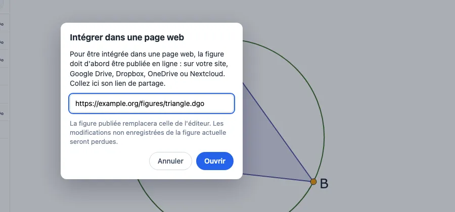
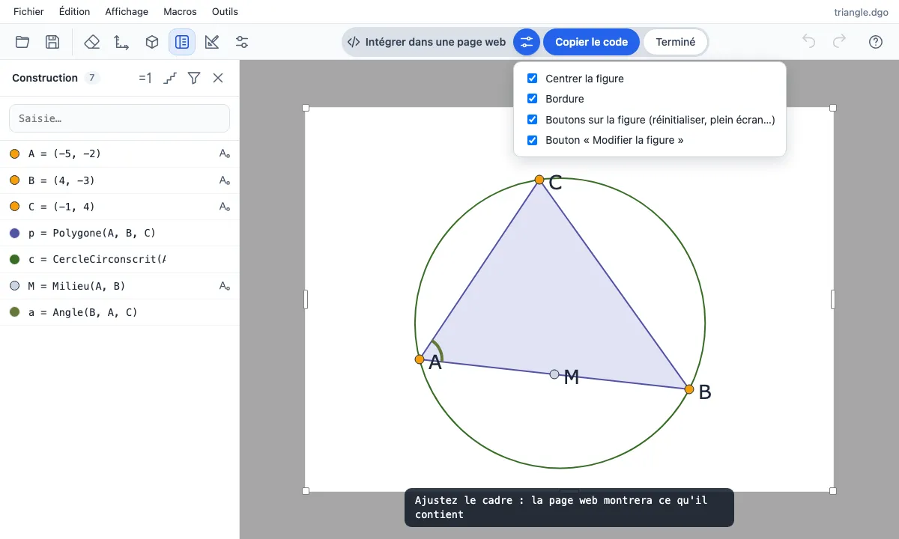

Intégrer dans une page web
Une figure DocGeo peut s’afficher dans n’importe quelle page web — votre site, un cours Moodle, un blog — et s’y manipuler comme dans DocGeo. Il suffit de coller dans le HTML de la page un code que l’éditeur prépare. La figure s’adapte à la largeur de la page, y compris sur un téléphone.
Le principe
La page ne contient pas la figure : à chaque affichage, elle va la lire là où vous l’avez publiée en ligne. Ainsi :
- la figure doit d’abord être déposée en ligne, comme pour la partager par un lien ;
- pour mettre à jour la page, il suffit de remplacer le fichier publié : toutes les pages qui l’intègrent montrent aussitôt la nouvelle version, sans toucher à leur code.
Étape par étape
-
Enregistrez la figure (Ctrl S), puis
déposez le fichier
.dgoen ligne : sur votre site, Google Drive, Dropbox, OneDrive ou Nextcloud. Copiez son lien de partage. -
Choisissez
Fichier › Intégrer dans une page web…. Si
la figure n’a pas été ouverte par son lien, DocGeo le
demande : collez-le et cliquez sur Ouvrir.
La figure publiée remplace alors celle de l’éditeur, ce qui
garantit que le code fonctionnera.

- Un cadre apparaît sur la figure : la page montrera exactement ce qu’il contient. Ses poignées (coins et milieux des côtés) le redimensionnent, ses bords et son étiquette le déplacent. Pour cadrer, vous pouvez aussi zoomer, déplacer la vue ou faire tourner une figure 3D ; la figure reste manipulable.
-
Réglez si besoin les options, avec le bouton placé à gauche
de Copier le code.

- Cliquez sur Copier le code, puis collez ce code dans le HTML de votre page.
- Terminé ou Échap retire le cadre.
Les options
| Option | Effet |
|---|---|
| Centrer la figure |
entoure le code de <center> :
la figure est centrée dans la page.
|
| Bordure | un filet gris autour de la figure. |
| Boutons sur la figure | une petite barre en haut à droite de la figure, visible quand la souris la survole : réinitialiser la figure, l’afficher en plein écran. |
| Bouton « Modifier la figure » | ajoute à cette barre un bouton qui ouvre la figure dans l’éditeur, dans un nouvel onglet. À décocher, par exemple, pour que des élèves ne voient pas la construction. |
Toutes les options sont cochées au départ ; vos choix sont gardés jusqu’à la fermeture de l’éditeur.
Le code à coller
Le code copié ressemble à ceci :
<center><iframe
src="https://…/index.html?fit=704,512,…&url=https://…/triangle.dgo"
style="width:704px;max-width:100%;aspect-ratio:704/512;border:1px solid #ccc"
allow="fullscreen" loading="lazy"></iframe></center>
Pour changer la taille de la figure dans la page, ne modifiez
que width, en pixels : la hauteur suit, et la
figure garde les proportions du cadre. Sur un écran plus étroit,
comme celui d’un téléphone, elle se réduit d’elle-même
(max-width:100%). Ne changez
aspect-ratio que pour donner une autre forme à
l’emplacement de la figure, qui y reste entière, centrée. Les
nombres qui suivent fit= décrivent ce que montre la
figure, pas sa taille : ne les modifiez pas.
Collez le code là où la page accepte du HTML : dans le fichier
.html lui-même, dans un bloc « HTML personnalisé »
de WordPress, ou dans le mode HTML (code source) de l’éditeur de
texte de Moodle.
Dans la page
La figure s’y manipule comme dans DocGeo : points, curseurs, cases à cocher, boutons… Glisser dans une zone vide déplace la vue, ou la fait tourner en 3D. La molette fait défiler la page, comme partout ailleurs ; pour zoomer la figure, utilisez Ctrl + molette, ou pincez sur le pavé tactile.
Écartez deux doigts pour agrandir la figure, rapprochez-les pour la réduire. Glissez les deux doigts ensemble pour déplacer la vue.
Les boutons en haut à droite réinitialisent la figure (telle que la page l’a ouverte), l’affichent en plein écran et, si l’option est cochée, l’ouvrent dans l’éditeur.
Une figure qui a une vue tableur montre sa feuille, sans menus ni boutons : on peut saisir dans ses cellules, et la figure suit. La réinitialisation rend les cellules d’origine (pour les élèves).

Mettre à jour une figure intégrée
Ouvrez la figure dans l’éditeur par son lien (par exemple avec le bouton « Modifier la figure » de la page), modifiez-la et enregistrez-la, puis remplacez le fichier publié au même endroit, en gardant son lien : sur Google Drive, en important une nouvelle version du fichier ; sur Dropbox, OneDrive ou Nextcloud, en déposant le nouveau fichier sous le même nom, dans le même dossier. Toutes les pages qui intègrent la figure montrent alors la nouvelle version, sans changer leur code.
Pour changer seulement le cadrage, refaites Fichier › Intégrer dans une page web… et copiez le nouveau code : le fichier publié n’a pas à changer.
Si la figure a été modifiée dans l’éditeur depuis son ouverture par son lien, DocGeo le rappelle avant de montrer le cadre : tant que le fichier publié n’est pas remplacé, la page montre l’ancienne version.
Si la figure ne s’affiche pas
- Le lien doit être public : accès « Tous les utilisateurs disposant du lien » sur Google Drive, lien sans mot de passe sur Nextcloud.
-
Certaines plateformes retirent les
<iframe>du HTML collé, ou ne les acceptent que pour certains sites ou certains utilisateurs : vérifiez les réglages de la vôtre. -
Un code copié depuis un DocGeo installé sur votre ordinateur
(adresse
localhost) ne fonctionne que sur celui-ci : copiez le code depuis l’éditeur en ligne. -
Le bouton plein écran n’apparaît que si l’
<iframe>a l’attributallow="fullscreen", que le code copié contient.